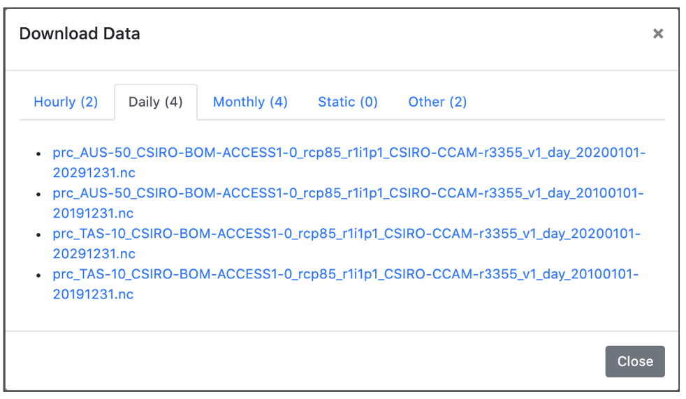

After confirming all the selcted parameters are correct when a user click the download button Download data window will pop up with the time resolution data where a user can select/change a specific time resolution and they will have access to all time resolutions via tabs catagorized like hourly,daily,monthly, static.
